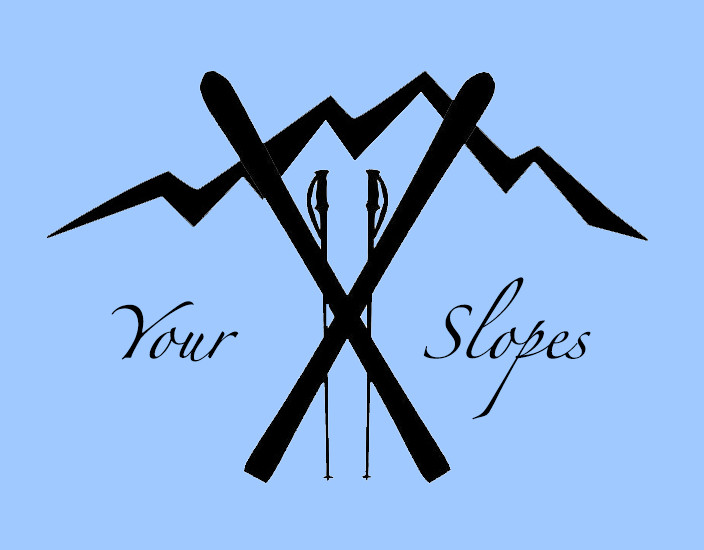

Site
Interactive Map
Lans-en-Vercors
Description à mettre
Villard-de-Lans
Description à mettre
Chamrousse
Description à mettre
Les Sept Laux
Description à mettre
Alpe d'Huez
Description à mettre
Deux Alpes
Description à mettre
La Grave - La Meije
Description à mettre
Alpe du Grand Serre
Description à mettre
Questionnaire
Fill the questionnaire and find your best suiting resort !
Chargement en cours...

MAP
Explore the surroundings !
This page will help you find the best ski resorts for you according to your level by filling in the questionnaire.
You can also see the main resorts near Grenoble on the map with the main information you need.
Have a good ride !